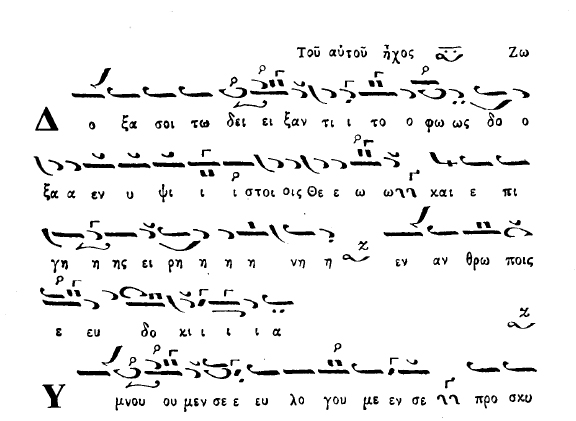

Είναι ο Βαρύς Τετράφωνος ίδιος με το μακάμ Πεστενιγκιάρ; / Is Barys Tetraphonos
the same as maqam Bestenigar?
Θεωρία και πράξη αντιφάσκουν / Theory and practice disagree
Introduction
In the past 250 years (and possibly earlier) there have been a number of Ecclesiastical
compositions known to belong in a special type of Barys Diatonic Mode which is often
identified as Barys Tetraphonos or maqam Bestenigar by some psaltai. The earliest
well known composition that we know of in this mode is a doxology of Iakovos Protopsaltis
in late 18th century

(scanned from Mousike Pandekte, 1850, vol 2, click for original size)
According to most of the -relatively few- Byzantine theoreticians that talk about
this mode, Barys Tetraphonos uses the "diatonic scale" where DI is flattened temporarily
or permanently (throughout the piece) and ZW is also flattened sometimes as in other
diatonic modes. Since no mention is made about GA, one assumes that GA is meant
to be performed natural. Indeed, this theory corresponds exactly to the way maqam
Bestenigar is performed today in secular (external) music. However, this theory
does not correspond to modern psaltic practice. In all recorded performances of
such pieces, Barys Tetraphonos does not use "the diatonic scale". It uses "a diatonic
scale" of its own which requires new theory to describe it. Some theoreticians,
Konstantinos Psahos being the first of them, already tried to present such a new
theory in the past but their views appear incomplete and sometimes incorrect. In
this page, we examine the history of the issue, the different theories and compositions
from both Ecclesiastical and Secular repertoire and we attempt to draw conclusions
regarding questions such as:
- When does Barys Tetraphonos appear in Ecclesiastical music?
- Why do most chant theoreticians not talk about Barys Tetraphonos?
- Why do even modern theoreticians present an incorrect theory about this mode?
- Are there more than one type of Barys Tetraphonos in Ecclesiastical music?
- Why is Barys Tetraphonos different than modern maqam Bestenigar?
- Could maqam Bestenigar have been the same as Barys Tetraphonos in the past?
- Are papadic pieces of Barys Diatonic meant to be chanted in Barys Tetraphonos?
- What do the chromatic fthorai mean in pieces of Barys Diatonic?
- Is Barys Tetraphonos an Authentic (Kyrios) or Plagal mode?
- What is the apechema of Barys Tetraphonos?
- How should Barys Tetraphonos be notated in scores?
- and more...
We support our conclusions with as many scores and recordings of this mode as we
could find.
Maqam Bestenigar in Secular (External) Music
Maqam Bestenigar is a well known and popular maqam in "external" (non-Ecclesiastical)
music. The following excerpt from K. Signell's book "Makam: Modal Practice in Turkish
Art Music" contains the currently accepted scale of this maqam [
pdf, 72 Kb]. The maqam is a combination of maqam Iraq (or Arak) and maqam Sabah "sitting" on top of it. The melodies make use mostly of maqam Sabah and they only make cadences
to Iraq every now and then. The interval ZW-GA in this maqam is an imperfect fifth
interval which is what gives this maqam its special character. This theory agrees
with instrumental practice as shown by the following two recordings:
Excerpt from Pesrev in Bestenigar played on Tanbur by Cemil Bey [
mp3, 180 Kb]
Taqasim in Bestenigar performed on Ney by Niyazi Sayin [
mp3,
3 Mb] (from dosyalar.semazen.net)
The Modal Martyria of Barys Tetraphonos in Ecclesiastical Scores
Ecclesiastical compositions thought to be written in this maqam are labelled with
inconsistently different names in the literature. Here is a list of different indications
we have seen or heard about pieces of Barys Tetraphonos. Examples scanned from scores
can be found in the analysis that follows.
- Plain Modal martyria of Barys Diatonic with no other sign/indication
- Barys Diatonic (with/without modal martyria of Barys)
- Barys Tetraphonos (with/without modal martyria of Barys)
- Bestenigar (with/without modal martyria of Barys)
- A four note ascent sign next to the modal martyria at the top of the piece (e.g.
in Gregorios' case [jpg], from "Mousike Pandekte" [reference pending])
- Placing a permanent flat crossed sign on DI at the beginning of the piece (e.g.
in Gregorios Protopsaltis' Axion Estin ([html,
page 453] (from anemi.lib.uoc)
- Repeating simple (uncrossed) flat signs on DI througout the piece like for example
in one of the most respected classical books "Mousike Pandekte" [reference pending]
in the Doxology of Iakovos Protopsaltis [jpg].
- A textual comment saying that the mode is Barys Diatonic where the pitch of GA should
be "always sharp" [jpg]
From the above descriptions, only the last one gives a hint about the pitch of GA
in performance.
Barys Tetraphonos: An Authentic ("Kyrios") or Plagal ("Plagios") Mode?
Without a GA sharp in its scale (8-12-10-8-12-12-10) we have a non-conventional
scale where the basis note does not have an octave relationship with its Heptaphonia
(the upper end of the scale) and which is 4 moria short of a perfect Diapason scale
(68 instead of 72 moria). Adding the missing 4 moria by assuming GA sharp a permanent
part of its scale, then the Mode has a typical Plagal scale with two diatonic tetrachords
disjunct by a major (12) tone. This agrees with the general perception of Barys
acting as Plagal Third Mode and with the theoretical rule that only a Plagal Mode
can have a Tetraphonos special sub-mode. However, Barys Tetraphonos is special in
that, although it is called Tetraphonos, it does not seem to correspond to an Authentic
Mode, as happens with the Tetraphonos' branches of all other Plagal modes. We are
not sure why this is like that.
Barys Tetraphonos: Is GA ever natural in this mode?
When the melody reaches GA from below and descends, it seems there is more or less
agreement between theoreticians (and oral practice from what it seems) that GA "returns" to its natural (un-sharpened) position (e.g. see Simon Karas' "Theoretikon", vol
I. p. 337). However, in practice, the musical scores often indicate special chromatic
fthorai in such melodic passages to show that even then GA is sharp sometimes. The
rest is left to the experience of the psaltis.
The Performance of Barys Tetraphonos by Psaltai
It is clear that the intervals of the recordings below match those of Barys Tetraphonos,
rather than maqam Bestenigar.
Doxology in Barys Tetraphonos Mode of Iakovos Protopsaltis chanted by Archon Protopsaltis
Thrasyvoulos Stanitsas [
mp3, 6.7 Mb]. Recorded from the radio show presented by Emmanouel Sourgiadakis and Evangelos
Linardakis on the radio station of the Archdiocese of Crete.
Doxology in Barys Tetraphonos Mode of Iakovos Protopsaltis chanted by Metropolitan
of Samos
Irinaios Papamihail by Melpo Merlier in the 1930's
[
wma].
Available from musicale.gr
Doxology in Barys Tetraphonos Mode of Iakovos Protopsaltis chanted by protopsaltis
Matthaios Tsamkiranis [
mp3, 857 Kb].
Doxology in Barys Tetraphonos Mode of Gregorios Protopsaltis chanted by Archon Protopsaltis
Thrasyvoulos Stanitsas' choir [
rm,
1.2 Mb]. Published on IBM LP available from
cmkon.org
Other compositions in Barys Tetraphonos differ from the above in that DI flat is
rarely or never notated and the melodic movement is somewhat (but not a lot) different.
For instance, DI flats do not appear at all in the Polyeleos "Logon Agathon" of
Georgios Kres [
pdf, 1.5 Mb] as they do in Iakovos' doxology - which by the way was probably written
down originally by the same Georgios Kres. Some DI flats are notated in the version
of Georgios Kres' "Logon Agathon" published by Petros Ephesios in his Anthologia
(see examples below). In terms of oral tradition, the mode is interpreted exactly
the same as the above recordings of the doxologies in Barys Tetraphonos. To prove
this, we superimposed two such pieces by Stanitsas and Sfikas after transposing
the base pitch of one of the recordings to match the other [
mp3, 2.5 Mb]. Here are the relevant scores and recordings:
- Polyeleos "Logon Agathon" (Psalm 44) by Georgios Kres [pdf, 1.5 Mb] (from "Mousike Pandekte" vol 2, Constantinople, 1850) chanted by
Stephanos Prousalis [mp3, 1.7 Mb] (broadcasted on the radio by Stamatios Kissas) and Georgios
Michalakis [wma] (offered by Georgios Michalakis).
- The same Polyeleos in a different composition (from a score unknown to us currently)
chanted by protopsaltis Leonidas Sfikas [mp3, 2.9 Mb] (broadcasted on the radio by Lykourgos Angelopoulos and Konstantinos Angelidis).
The History of Barys Tetraphonos and Bestenigar
Barys Tetraphonos as a name is mentioned since the Byzantine times and chanted as
part of
Ioannis Koukouzelis' Mega Ison of Papadike (between
12-14th centuries) [
jpg] (scanned from Agathangelos Kyriazidis "En Anthos Ecclesiastikes Mousikes", reprinted
by Regopoulos). However, this Tetraphonos the way it is written and chanted is totally
different to the Barys Diatonic Tetraphonos that we understand today by that name.
Clearly here we are talking about the Tetraphonos of the so-called "Enharmonic" Barys from GA, which sounds like Plagal Fourth from GA. Listen to the sample of
the excertpt above by the Maistores choir directed by Prof. Gregorios Stathis [
mp3, 950Kb].
A few centuries later, at the end of the 18th century, Apostolos
Konstas presents the first theoretical evidence of Barys Tetraphonos
as we know it, as a separate modal branch of Barys Diatonic. Apostolos gives a sample
score (see below) that seems to be identical to what we call Barys Tetraphonos today.
It is not clear to us yet as to what the fthorai mean at the beginning of the piece.
It is surprising why the Three Teachers (Chrysanthos and Chourmouzios in particular),
the Patriarchal Committee of 1881-83 and following theoreticians until Boudouris
(with the exception of Georgios Lesvios who mentioned it in 1840 with a different
name) chose to ignore this modal branch in their theoretical works (even though
the mode was clearly present (and mentioned) in musical scores such as the manuscripts
of Gregorios Protopsaltis, official Patriarchal scores such as the Pandekte of Stephanos
and Ioannis, 1850 and elsewhere.
(from ms EBE 1867, published in exact photocopies by Charalambos Karakatsanis, click
for original size)
At the same time as Apostolos (late 18th century),
Iakovos Protopsaltis
composed his famous Doxology in Barys Tetraphonos.[
jpg] (scanned from Mousike Pandekte, 1850, vol 2). At least in Mousike Pandekte there
is no special indication that this mode is indeed Tetraphonos except for the explicit
flattening of DI at many places and the movement of the melody.
Another theoretician of the Old Method, Vasileios Stephanidis,
writes in 1819 about Barys Tetraphonos as it is found in Koukouzelis' Mega Ison,
however he doesn't describe the Barys Tetraphonos we are interested in here. This
could be an indication that either Stephanidis did not know much about this mode
which could possibly be because this mode was introduced in Ecclesiastical Music
around the end of the 18th century.
A few years later, in early 19th century, the Three Teachers
did not mention Barys Tetraphonos in their theoretical works. However, they did
write and publish pieces in Barys Tetraphonos (Gregorios' Axion Estin and Doxology/Chourmouzios'
Second Stasis of the Typika) and in maqam "Bestenigar" (Gregorios) using notation
identical to the Ecclesiastical pieces of Barys Diatonic. Here are some examples
of the relevant work of the Three Teachers on the subject:
Gregorios Protopsaltis wrote a "Kiari" (mathema of external
music) [
jpg, 50 Kb] labelled Bestenigar and presented as Barys Diatonic where DI is permanently flattened with
a crossed flat sign at the beginning of the piece and similarly, high ZW is also
flattened with a crossed flat sign on KE. Fr. Ierotheos' choice of (later added)
isokratema shows that he considers some phrases to be chanted with GA sharp (those
where ison is ZW) and some with GA natural (where ison is PA) as First Mode Diphonos.
Gregorios uses exactly the same notation for his Axion Estin which is labelled "Barys
Tetraphonos" in Mousike Pandekte ([
html,
page 453] (from anemi.lib.uoc). We find it hard to believe that the Ecclesiasticpieces
are meant to be chanted in different modes, however, lacking recordings, we cannot
be sure. Gregorios also wrote a Doxology in the same mode, however using a slightly
different notation with explicit flat signs on DI and different starting modal sign
(4 note ascent instead of mentioning the word "Tetraphonos" [
jpg].
Chourmouzios Chartophylax composed the katavasiai of Pentecost
in Barys Tetraphonos [
zip] (from his Anastasimatarion, 1832) which Georgios Lesvios calls Bestenigar a few years
later in 1840 (see below). In 1830, Chourmouzios published the book "Euterpe" ([
html]
available from Anemi digital library) and
Theodoros Phokaeus
published the book "Pandora" with a number of external music compositions (with
Turkish lyrics) under the section of maqam Bestenigar. All pieces are labelled as
Barys Diatonic without any extra discrimination, except of course for the label
"Bestenigar" on top of them. Looking at the compositions one would think that they
are chanted exactly as any other Barys Tetraphonos composition, Ecclesiastical or
not. The common characteristics of "Ecclesiastical" Barys Tetraphonos appear here
too.
- DI and ZW are inconsistently notated flat. For instance, at the beginning of this
piece [jpg] DI is notated flat only at one occurence but not at others leaving us in doubt as to whether DI is flat everywhere.
Seems that the answer to this is yes and it is left to the experience of the interpreter
to do the right intervals and the occasional flat sign is there to "remind".
- GA is notated but possibly not chanted always natural and it is often required to
be sharp in some cases (regardless of melodic movement) either via the soft [jpg] (b) or hard chromatic [jpg] (a) fthora, the chroa of Zygos [jpg] (a) or even explicitly with a sharp sign [jpg] (a).
- In other cases GA is probably meant to chanted natural e.g. here [jpg] (a) and here [jpg] (b).
- There is also the occasional enharmonic fthora on high ZW exactly as in the Ecclesiastical
pieces [jpg] (d).
We find it hard to believe that we are not talking about the same Barys Tetraphonos
here, however, lacking recordings, we cannot be sure.
Petros Ephesios in his Anthologia [18xx, reprinted by
the Greek Byzantine Choir in 1997] gives some more hints on the performance of Barys
Tetraphonos in the Polyeleos of Georgios Kres by the frequent use of flat and sharp
signs and fthorai. We scanned some examples:
(a) Here GA could be natural (see part labelled (c)):
(scanned from Petros Ephesios' "Anthologia", published by the Greek Byzantine Choir,
click for original size)
(b) Descending from above, DI - GA - BOY, can have GA either sharp or natural. Often
the choice is with the psaltis whether to sharpen GA on descend or not. Here is
an example from Petros Ephesios' Anthologia where a sharp GA on descent is mandated
with a sharp sign:
(scanned from Petros Ephesios' "Anthologia", published by the Greek Byzantine Choir,
click for original size)
(c) Other times, a hard chromatic fthora is placed on DI to remind of a sharp GA
and a flat BOY.
(scanned from Petros Ephesios' "Anthologia", published by the Greek Byzantine Choir,
click for original size)
Stephanos Lambadarios and
Konstantinos
Protopsaltis present a confusing description of Bestenigar in Konstantinos'
"Ermineia tes Eksoterikes Mousikes". There it is mentioned that maqam Bestenigar
uses the pitch of Cargah (GA natural) but right next to it is a scale with ZW flat
and GA sharp (!) using the same martyria as the natural diatonic GA [
jpg] (scanned from Konstantinos Protopsaltis' "Ermineia tes Eksoterikes Mousikes", 1840,
reprinted by Koultoura). This means that either Stephanos and Konstantinos mixed
up the maqam with some other maqam which is unlikely or that they wanted to say
that GA is sometimes (or mainly/always) sharp in Bestenigar or that GA is sharpened
when attracted by DI as explained by Panagiotis Kiltzanidis a few years later (see
below). In either case, their scale diagram coincides with Ecclesiastical practice
where GA is mainly performed sharp. It disagrees with their own text a few lines
above where they describe that GA is natural which coincides with instrumental practice.
Or they meant something else that escapes us currently.
Following the example of his predecessors,
Konstantinos Protopsaltis
composed a doxology in Barys Tetraphonos too [
jpg]. Notice the odd notation in places (g) and (j) where it is not clear whether the
flat sign corresponds to BOY or to GA. Our opinion is that it corresponds to BOY
and requires GA sharp as does Barys Tetraphonos when cadencing to GA. Konstantinos
(or rather Stephanos Lambadarios who actually transcribed the doxology in the New
Notation) also notates the occasional GA sharp with chromatic fthorai [
jpg] (notice the unusual flat on an ison) and here [
jpg]. In other cases like (c) here, GA is probably meant to be performed natural [
jpg].
In that same year (1840),
Georgios Lesvios (a student
of the Three Teachers in early 19th century) proposes a new name "Tenth Mode" to
replace the "barbaric" [sic] in his opinion Arabo-Persian name "Bestenigar" which
he identifies with "Barys Tetraphonos" and mentions that in this mode are chanted
"the doxology of Iakovos Protopsaltis, the katavasiai of Pentecost and the "Ainei
e Psyche Mou" of Chourmouzios Chartophylax and plenty of external music songs" [
html,
page 11] (from anemi.lib.uoc). Here is the presentation of this "Tenth mode" by
Georgios Lesvios from his theory book. [
jpg] (scanned from Georgios Lesvios' "Eisagoge Eis to Theoretikon te kai Praktikon Tis
Mousikis Technis", Athens, 1840, reprinted by Regopoulos, 1994, click for original
size). So, according to Georgios Lesvios, both the Ecclesiastical pieces of Barys
Tetraphonos (like Iakovos' doxology) and the external music songs are chanted in
one and the same mode. That simplifies the presentation however does not resolve
the issue of the pitch of GA. If we were to accept Lesvios' description, GA is always
natural and DI is always flat in this mode which clearly is not true in Ecclesiastical
oral practice (only in external/folk modern instrumental practice).
Forty years later,
Panagiotis Kiltzanidis presents Bestenigar
with GA natural (and only sharp when attracted by DI but no other time) and DI and
ZW flat and occasionaly BOY flat.[
jpg] (scanned by Vasili Zacharis from Panagiotis Kiltzanidis' "Methodike Didaskalia of
Greek Music", Constantinople, 1881, reprinted by Regopoulos). Surprisingly, Kiltzanidis
writes a flat sign next to the martyria of DI on the scale diagram, however he does
not provide a special interval line for that flat in the diagram (as he does with
the other flat/sharp signs on other notes). Note also that the normal diatonic martyria
of DI is used for the permanently, according to the scale, flat DI. Of interest
is that Kiltzanidis, a member of the
Patriarchal Committee of 1881-83,
knows and publishes about Bestenigar before the Committee convenes however no explicit
mention of it or Barys Tetraphonos was made in the presentation of the Ecclesiastical
Modes by the Committee.
In early 20th century, the first Ecclesiastical music theory book to talk about
GA sharp in Barys Diatonic Mode was that of
Konstantinos Psahos
[
jpg] (scanned from Konstantinos Psahos' "To Oktaechon Systema...", published by Georgios Hatzitheodorou). Psahos didn't
see GA sharp as a permanent sharpening, just as a melodic attraction towards making
the fifth interval perfect when the melody revolves around GA because in his opinion
the imperfect fifth interval is "not acceptable by nature" (analogion.com: Wonder
whether he thought that maqam Bestenigar of external intrumental music was also
unacceptable by nature!). Surprisingly he doesn't talk about flattening DI and ZW
which is so common in compositions of Barys Tetraphonos. And he does not cover cases
where GA is sharpened when the melody does not revolve around it (as we demonstrate
on this page). Despite that, it seems that this is the first attempt at an explanation
of when GA is sharp and when it isn't in Barys Diatonic.
A contemporary of Psahos, Monk Nektarios presents a Cherouvikon
of Misael Misaelidis Protopsaltis of Smyrna in a modal branch of Barys which according
to the comment at the top of the piece has "GA always sharp". It is not clear whether
the comment was added by Misaelidis or by Monk Nektarios. Regardless, the author
of the comment either ignored the name "Tetraphonos" or intentionally omitted it
to avoid the exact confusion discussed on this page. However, this seems to be the
first Ecclesiastical score that explicitly mentions Barys with a permanent sharp
GA.

(scanned from Monk Nektarios' "Kaliphonos Aedon", 1933, reprinted 8th edition 1990,
click for original size)
Around the same time (early 20th century),
Ioannis Palasis
wrote a Trisagion in Barys Tetraphonos (not labelled as such though) that is chanted
with GA always sharp by the choir of the Constantinopolitan Friends of Music. See
the score [
jpg] (scanned from Lykourgos Petridis' "Leitourgia") and listen to the recording [
rm,
1.7 Mb] (from ieropsaltis.com). A number of other modern (20th cent.) compositions
of Trisagia and Dynamis exist that are all chanted in exactly the same way, even
though GA is not explicitly notated sharp.
A few years after Psahos, in the 1940s, Archon First Domestichos
Angelos Boudouris becomes the first ever Patriarchal theoretician to
acknowledge the existence of Barys Diatonic Tetraphonos as an independent modal
branch and presents it as an independent branch of Barys Diatonic. He says that
Barys Tetraphonos (the mode of Iakovos' doxology) has DI flat and does not mention
at all about GA (therefore assuming it natural). Boudouris reiterates the incorrect
theoretical descriptions of the past regarding GA, disagreeing with oral tradition.
He seems to ignore (or chose to ignore) Psahos' explanation about a sharp GA in
Barys Diatonic. He could obviously hear the sharpened GA in performance however
he did not go on to describe "new theory" for it.
A few years later, in the 1950s,
Avraam Efthemiadis does
not talk at all about a sharpened GA when discussing Barys Diatonic Tetraphonos,
he only mentions the flattening of DI and ZW when the melody revolves around GA
which he observes that is the same in all diatonic modes [
jpg] (scanned from "Mathemata Byzantines Ecclesiastikes Mousikes", p. 437). He says that
this is the mode in which Iakovos' doxology is chanted in. From the description
one understands that Iakovos Doxology is chanted with GA natural which disagrees
with oral tradition. Efthemiadis seems to also have ignored (or chose to ignore)
Psahos' explanation about GA sharp in Barys Diatonic and tried to justify the reiterated
confusing theory of GA being the "same as in all diatonic modes" by giving a generic
explanation which however appears incorrect.
In 1982,
Simon Karas in his "Methodos Tes Ellenikes Mousikes
- Theoretikon", vol I, p. 335, [
jpg] attempted to resolve the confusion by becoming the first to theoretically present Bestenigar
as a special case of what he called plain ("haplos") Barys Diatonic mode with GA
always natural. This was a different mode from Barys Tetraphonos which according
to Karas has a sharp GA which only natural when the melody reaches it from below
and then descends. The intervals of Barys Tetraphonos "Bestenigar" as presented
by Karas match exactly those of the maqam Bestenigar i.e. there is an imperfect
fifth interval ZW- GA natural (38 instead of 42 moria). Karas acknowledges that
this mode has also been called "Barys Tetraphonos" by the modern ecclesiastical
musicians. He also observes that ecclesiastical musicians before him had not presented
a special martyria (modal sign) for this mode, choosing to just indicate it with
flat signs on DI and ZA througout the piece instead. Karas even composed and presented
a suitable apechema for it as there didn't exist one (he did the same for Barys
Tetraphonos with GA sharp for the same reason). Specifically, according to Karas,
the Greek name of the mode should be Mesos of Plagal First Diphonos Mode, consisting
of a diphonia [ZW-PA] followed by diphonia [PA-GA natural] followed by a soft chromatic
tetrachord [GA natural-DI flat-KE natural-high ZW flat].". He mentions that this
is the mode in which Iakovos' doxology is chanted. What is strange here is that
Karas doesn't seem to have noticed or chose to ignore the discrepancy between oral
tradition and his theoretical presentation. He didn't consider the possibility of
the mode using a different scale in folk (Bestenigar) and ecclesiastical music (Tetraphonos).
In late 20th century, Karas' student, musicologist Marios Mavroeidis,
disagrees with Karas in his book "Echos, Tropos, Maqam" [reference pending] and
says that maqam Bestenigar does not have an equivalent in Ecclesiastical music.
Mavroeidis obviously had in mind the instrumental version of the maqam. Despite
that comment, Mavroeidis does not endeavour to resolve the confusion discussed in
this page.
In 1991, protopsaltis
Charalambos Karakatsanis presents
yet another theory, more to the point, although not without confusing or missing
elements. In his book "Mousikon Leimonarion" (vol. 7 on Barys Mode) he attempts
to clarify some things based on his experience and his reading of earlier works
by
Simon Karas,
Spyros Kapsaskis
and
Theodoros Hatzitheodorou. Karakatsanis says that Barys
Diatonic uses a single scale with GA sharp. He doesn't accept GA natural in Barys
Diatonic, with Spyros Kapsaskis' justification that the mode should have a major
tone (12 moria) as a disjuntive (diazeuktikos) tone between its two tetrachords.
And he correctly points out the raison d'etre of the chromatic fthorai in pieces
of Barys Diatonic mode to signify a sharp GA (and a flat BOY). Inside his book (page
232) he presents an apechema of Barys with GA sharp [scan pending]. He also proposes
using a different martyria for GA of Barys Diatonic, to signify that it is sharp,
following the example of Simon Karas. His theory is unclear in a few places at least:
(a) He says that GA is to be performed natural as in First Mode when a diatonic
fthora "resolves" a chromatic one. This may be true sometimes (like in "Ton Despotin")
in modern oral tradition but certainly it is not a general rule. E.g. the Polyeleos
"Logon Agathon" of Georgios Kres and other pieces do not follow this rule. Even
the second part of "Ton Despotin" can be chanted in Barys Tetraphonos as demonstrated
by Georgios Michalakis [
mp3].
He doesn't mention anything about GA returning to its natural position when the
melody reaches it from below and then descends.
(b) He quotes Theodoros Hatzitheodorou (page 5 of the introduction) saying that
in "Barys Tetraphonos" (as he calls it) GA is steady ("statheros", meaning natural)
as opposed to Barys Heptaphonos where GA is always sharp. However, this is not true
in today's practice as we have seen.
(c) In page 8 of the introduction, he provides a scale for maqam Bestenigar with
BOY flat, GA sharp, DI flat, KE flat (!), and ZW enharmonic (atzem) with the following
explanation "starts from GA, ends in low ZW, ascending it requires ZW flat and descending
it requires GA sharp". He doesn't mention where he got this scale from and it is
surprising that he doesn't refer to the difference between the external and ecclesiastical
music traditions on the matter. Finally, KE flat in this mode seems incorrect. The
indication that Bestenigar pieces start from GA is interesting and it is generally
true that so-called "Bestenigar" pieces do start from GA. So perhaps "Bestenigar" after all could be Barys Tetraphonos which starts from GA and descends.
(d) He doesn't provide references for most of his theoretical points about Barys.
In the music scores of the book, in the Leitourgika of Dimitrios Mavropoulos (page
285), we spotted a NH flat on descent in Barys Diatonic mode which was rather surprising.
In 2005, musicologist
Vasilios Katsifis in his book criticising
Karas' theory [reference pending] does not mention anything particularly relevant
about Karas' presentation of Bestenigar, however elsewhere he says that in his opinion
Barys Tetraphonos always has DI flat and ZW flat (unlike Karas who supports only
Bestenigar has those flats). He does not present a numbered scale of Barys Tetraphonos.
He disagrees with Karas about the existence of Barys Bestenigar and also about Plain
"Haplos" Barys and presents Barys Tetraphonos with GA natural and DI/ZW flat without
mentioning anything about GA sharp in it [
jpg, 256 Kb]. We do not know why Katsifis also chooses to ignore oral tradition and previous
theoretical works in this matter and keeps reiterating incorrect theories.
In 2006,
Georgios Michalakis [
html], acknowledges that new theory needs to be written for Barys Diatonic (especially
for the type of Barys with "special intervals" as he calls the Barys Tetraphonos
we study on this page) and presents his ideas on the matter (see our page on Barys
Diatonic [
html]). Disagreeing with all other theoreticians he sees what we have been calling GA sharp of Barys Tetraphonos as GA natural and,
to justify the Tetraphonos intervals below it, he proposes a theory where all intervals
below (the natural) GA are lowered. A tentative interval diagram without numbers
for all intervals of interest is presented. His theory does not seem to have basis
in psaltic practice. Psaltai generally think of a sharp GA when chanting this mode
and not of shortened intervals below it.
Conclusions
Very little has been written by Byzantine Music theoreticians about Barys Diatonic
and Barys Tetraphonos in particular. The descriptions are incomplete, contradicting
each other and confusing. This probably is a result of losing the sense of modal
branches (Diphonos, Triphonos, Tetraphonos, Heptaphonos) after the reform of the
Three Teachers in 1814. The most likely reason in our opinion is that Barys Tetraphonos
was assumed "known" for someone who knew how to chant Barys Diatonic therefore not
requiring special mention. The relative silence of past theoreticians on the subject
could also indicate that the mode was perhaps recently (18th century) "imported" from external music and therefore noone really knew much about it. Finally, it could
be that the mode changed in the course of time to use special intervals that needed
new theory to be written.
According to the literature, there is strong evidence that Barys Tetraphonos was
seen as identical to maqam Bestenigar of external music in the 19th century (see
literature survey above). If that's indeed true, it means that either Ecclesiastical
oral tradition changed since then or that the performance of the maqam in external
music changed. A hypothetical explanation is that oral tradition changed the intervals
of Barys Tetraphonos due to the difficulty or detest of performing the imperfect
fifth of Bestenigar or for other reasons. Another equally likely hypothesis is that
the maqam changed in the 19th or 20th century to use a Sabah scale on top of Iraq.
Finally, it is not unlikely that the identity of Barys Tetraphonos and maqam Bestenigar
may have always been a misconception of psaltai and theoreticians which led to the
misrepresentation of the maqam (and the mode) in the musical scores and theory books
until today.
Identifying Barys Tetraphonos with maqam "Bestenigar" as it is today performed in
instrumental music is wrong. Psaltic oral tradition and external instrumental music
use different intervals to perform (secular in this case) pieces that are written
in this mode. Based on the literature, the mode and the maqam could have been identical
in the 19th century however today they are performed differently. Because of this
uncertainty, we cannot be sure how they songs of Euterpe and Pandora were chanted
in the 19th century.
There is only one independent Barys Tetraphonos Mode Ecclesiastical music, which
in terms of intervals it is performed the same way regardless of the presence of
flat signs on DI and ZW and regardless whether the name "Bestenigar" is associated
with a piece (like Iakovos' doxology). The name "Bestenigar" could just mean melodies
of Barys Tetraphonos that start from GA (sharp) showing the DI flat and ZW flat
pitches and descending to low ZW (as mentioned by Charalambos Karakatsanis). Simon
Karas's presentation of "Bestenigar" as an Ecclesiastical mode (mesos of Plagal
First Diphonos Mode) has no basis in modern Ecclesiastical practice. There is also
Barys Tetraphonos of Koukouzelis' Mega Ison which is essentially Plagal Fourth Mode
from GA and only appears in passages of papadic pieces.
If some compositions today require to be chanted in maqam Bestenigar (with GA always
natural) then only such pieces should be labelled "Bestenigar" with a note requiring
GA natural. All others should be labelled "Barys Tetraphonos" and notated consistently
(for instance using the useful modal martyries of Barys Tetraphonos presented by
Simon Karas in his Theoretikon).
The papadic pieces of Barys Diatonic are generally chanted in Barys Tetraphonos
with passages of First (or Plagal First) Mode Diphonos, and Barys Heptaphonos [Recordings
pending].
Given the above analysis, it would be useful to write a complete theory of Barys
Tetraphonos (and Barys Diatonic). We will be grateful if anyone provides more information
on these subjects.

{kind=link}
{kind=link}
{kind=link}
{kind=link}
{kind=link}
{kind=link}
{kind=link}
{kind=link}
{kind=link}
{kind=link}
{kind=link}
{kind=link}
{kind=link}
{kind=link}
{kind=link}
{kind=link}
{kind=link}
{kind=link}
{kind=link}
{kind=link}
{kind=link}
{kind=link}
{kind=link}
{kind=link}
{kind=link}
{kind=link}